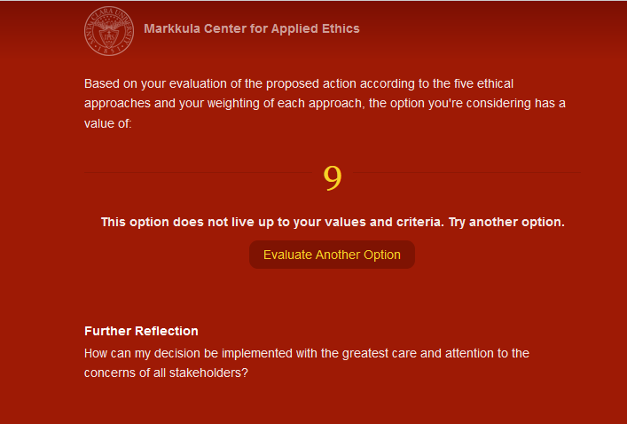

Análisis Malas Prácticas Profesionales sobre IDS
Artículo por Daniel Aviña RamírezLa Ingeniería en Desarrollo Sustentable es un campo sumamente amplio que tiene como objetivo principal mejorar continuamente los procesos humanos de manera que se equilibren los beneficios e impactos medioambientales, sociales y económicos. Teniendo esto en cuenta, como caso de estudio (utilizando el PLUS Ethical Decision Making Model) de malas prácticas en la persecución de dicho objetivo, se eligió el escándalo del software de control de emisiones de Volkswagen de 2015.
En 2015, la Agencia de Protección Ambiental (EPA) de Estados Unidos descubrió que distintos modelos de automóviles diésel manufacturados por Volkswagen estaban equipados con un sistema que detectaba cuando el automóvil se encontraba en un escenario de prueba de emisiones, el cual reducía el rendimiento del motor para disminuir la cantidad de gases de efecto invernadero liberados por el automóvil. Sin embargo, cuando estos automóviles circulaban normalmente, las emisiones de óxidos de nitrógeno liberadas superaban en 40 veces el límite permitido por la legislación estadounidense. Este descubrimiento provocó que se abrieran investigaciones sobre este asunto en países como el Reino Unido, Canadá, Corea del Sur, Alemania, entre otros. Ese mismo año, Volkswagen (Hotten, 2015) admitió que cerca de 11.5 millones de automóviles, repartidos por todo el mundo, estaban equipados con este sistema. De acuerdo con Hotten (2015), el número de personas que estaban involucradas en este asunto; sin embargo es una cadena que abarca desde directivos hasta ingenieros que tomaron tales decisiones y diseñaron tal “sistema de trampa”.
Estos fueron los resultados obtenidos con la aplicación de la Universidad de Santa Clara, tomando en cuenta ponderaciones idénticas para cada uno de los cinco criterios:
- Utilidad: Por un lado, los vehículos que comercializa Volkswagen son asequibles para distintos públicos, además de que su compra son fuente de trabajo e ingresos para distintas personas. Sin embargo, este sistema genera impactos a la salud pública y medioambiental al haber una mayor emisión de contaminantes. Esto se vuelve de gran importancia ya que la crisis climática es un problema que trasciende fronteras y afecta de manera desigual a poblaciones más vulnerables que no son parte de las causas del problema.
- Derechos: En este caso, se vulneran los derechos de los clientes finales que toman en cuenta el desempeño medioambiental de los vehículos, y la autonomía de los estados que tienen para establecen los requerimientos técnicos de un producto para poder ser comercializado en su territorio, por las diversas razones que sustentan la legislación local. Como se mencionó anteriormente, también se vulneran los derechos de las personas que ven afectada su salud respiratoria por tales contaminantes.
- Justicia: En este caso, la externalidad que tiene la contaminación no es internalizada de ninguna manera, y se beneficia principalmente a selectas persona a costa de generar un daño global en este caso.
- Bien común: Esta decisión busca beneficiar de manera económica a muy pocas personas, generando un daño colectivo que transgrede la legislación existente que busca proteger al medio ambiente y a la salud pública.
- Virtud: Esta actitud fue reprobada por distintos gobiernos e incluso por distintas figuras dentro de Volkswagen, por lo que no representa un ejemplo de virtud.
Referencias:
- Hotten, R. (10 de Diciembre de 2015). Volkswagen: The scandal explained. Obtenido de BBC: https://www.bbc.com/news/business-34324772